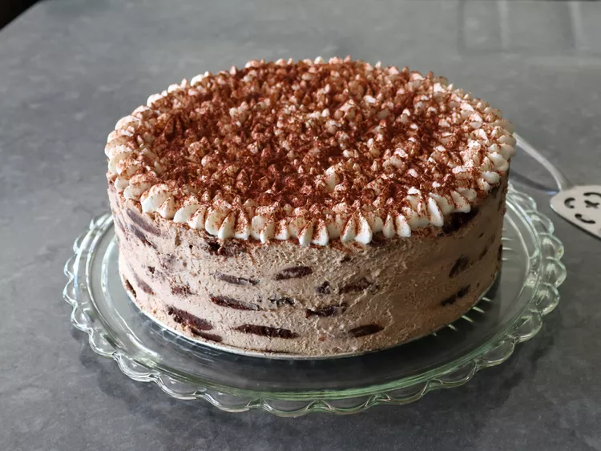

Description
This mocha chip icebox cake is an absolutely luscious dessert, and it is quite amazing what happens to the texture of the cookies after chilling. The cookies become almost cake-like, contrasting with creamy mocha mousse, while the chocolate chips stay firm. It's one of the easiest and most delicious chilled desserts ever.
Ingredients
- 1/3 cup white sugar
- 1 teaspoon instant coffee powder
- 1 tablespoon unsweetened cocoa powder
- 1 teaspoon pure vanilla extract
- 3 tablespoons coffee liqueur
- 2 cups cold heavy cream
- 12 ounces mascarpone cheese or cream cheese
- 4 (8 ounce) packages chocolate chocolate chip cookies (about 45), such as Tate’s Bake Shop Double Chocolate Chip Cookies
Steps
- Add sugar, coffee powder, cocoa powder, vanilla, coffee liqueur, and cream to a mixing bowl. Whisk or beat with an electric mixer until the mixture thickens, but before soft peaks form. Add mascarpone and beat just until stiff peaks form—if mixed any further, the cream will separate. Refrigerate mocha cream until ready to use.
- Line a 9-inch springform pan with a round of parchment paper. This step is optional.
- Place 8 cookies in bottom of pan, and then break a 9th cookie into smaller pieces, and use pieces to fill in gaps. Transfer in 1/4 of the mocha cream, and spread out evenly. Add another layer of cookies; press them lightly into the filling. Add another 1/4 of the mocha mixture, and spread out evenly. Repeat this process with the remaining ingredients, finishing with a layer of cookies, for a total of 5 cookie layers, and 4 filling layers. Wrap and chill for 12 to 24 hours.
- When ready to serve, run a thin knife between the edge of the cake and the inside of the springform pan ring. Release the spring, and gently slide the ring off. Slice and serve.